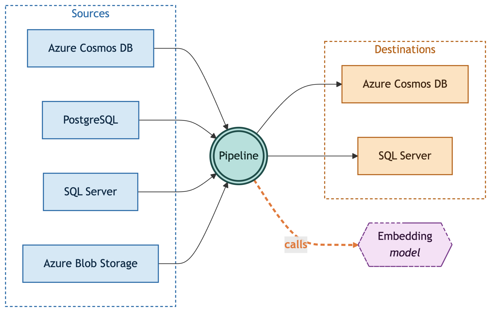
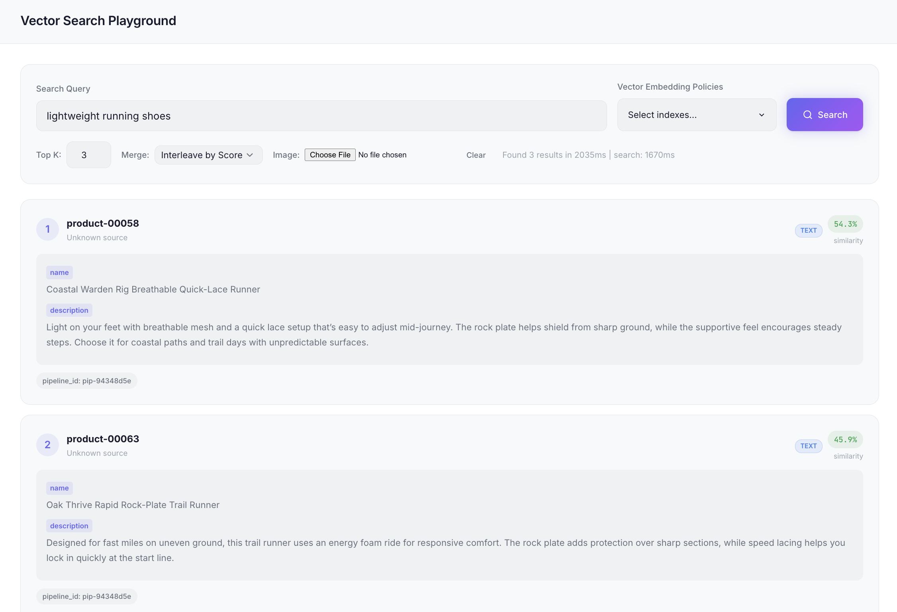

Introducing OmniVec: An Open-Source Embedding Platform for AI Apps on Azure
Originally posted on https://devblogs.microsoft.com/cosmosdb/introducing-omnivec-an-open-source-embedding-platform-for-ai-apps-on-azure/
Today we are open-sourcing OmniVec, a platform for building and operating the embedding pipelines that keep the vector representation of your operational data in sync as it changes. You register data sources, embedding model(s), vector stores (destination), and OmniVec does the rest: initial backfill, change tracking, model invocation to generate, and writing them back to your vector store. We are shipping this with support for Azure Cosmos DB, PostgreSQL, SQL Server (source and destination), and Azure Blob Storage (destination). You deploy OmniVec in your own Azure subscription, and use the web UI, CLI, or the REST API to manage it.
Most AI applications end up building the same plumbing to keep that vector representation in sync: a change-capture process on the source, a consumer pool that generates embeddings, retry and backfill logic, dead-letter handling, and the operational work to keep it all running. OmniVec collapses that stack into four configurable components: a source, a model, a destination, and a pipeline that wires the first three together.
Deep Dive
Deploying OmniVec into your Azure subscription provisions multiple Azure resources, including an Azure Kubernetes Service (AKS) cluster that hosts the OmniVec services (API, controller, and workers), an Azure Cosmos DB account for pipeline metadata, job state, and progress metrics, and an Azure Container Registry that stores the service images AKS pulls from, and more. You control the choices that affect cost and capacity, such as the embedding model (hosted Azure OpenAI or a self-hosted GPU model), the AKS node size and count, and whether to provision a GPU pool, etc.
Key concepts

OmniVec exposes the following core primitives:
- Source: A system OmniVec reads records from. The source definition tells OmniVec how to connect to it and how to track changes on it.
- Model: The embedding model OmniVec calls to turn record content into a vector. A model registration captures the provider, model name, endpoint, and credentials, and the runtime calls it with batching and retries.
- Destination: A vector store where the generated embeddings are written, alongside (or as an update to) the originating record.
- Pipeline: The binding that ties a source, a model, and a destination together. It also declares which source fields to embed and which destination field receives the vector.
Architecture at a glance
OmniVec runs as a set of services on Azure Kubernetes Service:
- REST API: A FastAPI control plane that holds the configuration of sources, models, destinations, and pipelines, and exposes it over REST. The CLI and the web UI use this API behind the scenes.
- Ingestion: Watches each source for changes and queues up the records that need embedding. How it tracks changes depends on the source: the change feed for Azure Cosmos DB, blob events for Azure Blob Storage, and CDC for SQL Server and PostgreSQL.
- Workers: A horizontally scalable pool on compute that pulls records off the queue, calls the embedding model, and writes the resulting embedding to the destination.
- Model routing layer: A unified entry point in front of the embedding models. It lets a pipeline call either an external provider like Azure OpenAI or a self-hosted GPU model.
- Metadata store: An Azure Cosmos DB account that the deployment provisions for you. It holds pipeline definitions, job state, progress metrics, etc.
OmniVec in action
Let’s put OmniVec to work end to end. In this walkthrough, you will:
- deploy it into your subscription
- point it at an Azure Cosmos DB container
- wire up a pipeline to automatically generate vector embeddings
- then run vector search over this data
We use Azure Cosmos DB as both the source and the destination here as an example, but this applies to any supported combination of sources, models, and destinations.
Prerequisites
Before you start, make sure you have:
- An Azure subscription with permissions to create resource groups, an AKS cluster, an ACR, and an Azure Cosmos DB account.
- An embedding model. This walkthrough uses an Azure OpenAI embedding model deployed in Microsoft Foundry. Deploy one in your subscription and note the endpoint, model name, and API key. You’ll configure them in OmniVec later.
- CLI tools:
- Azure Developer CLI (azd) for deployment.
- Azure CLI (az) to setup Azure Cosmos DB (but you can also do it directly via the Azure portal).
- kubectl and Helm
- OmniVec CLI from the OmniVec releases page to manage sources, destinations, pipeline, and config.
Then clone the quickstart repo, which has the sample data and seed script used later:
git clone https://github.com/AzureCosmosDB/omnivec-cosmosdb-quickstart
cd omnivec-cosmosdb-quickstartDeploy and configure OmniVec
Create a new azd environment for the deployment. Pick an ENV_NAME (it becomes part of resource names), and choose a LOCATION that supports AKS and Azure Cosmos DB in your subscription:
export ENV_NAME="my-omnivec"
export LOCATION="westus2"
export SUBSCRIPTION_ID="<your-subscription-id>"
azd env new "$ENV_NAME" --location "$LOCATION" --subscription "$SUBSCRIPTION_ID"Configure the deployment:
azd env set OMNIVEC_METADATA_STORE "cosmosdb-provisioned"
azd env set OMNIVEC_ENABLE_BLOB_SOURCE "false"
azd env set OMNIVEC_SYSTEM_NODE_VM_SIZE "Standard_D2ds_v5"
azd env set OMNIVEC_SYSTEM_NODE_COUNT 2
azd env set OMNIVEC_GPU_NODE_VM_SIZE ""
azd env set OMNIVEC_GPU_NODE_COUNT 0
azd env set OMNIVEC_BUILD_MODE "acr"
azd env set OMNIVEC_BUILD trueOMNIVEC_METADATA_STOREprovisions a dedicated Azure Cosmos DB account for OmniVec’s own pipeline metadata, job state, and progress metrics.OMNIVEC_ENABLE_BLOB_SOURCEis off because this walkthrough only uses Azure Cosmos DB as a source; turn it on if you need Azure Blob Storage.- Size the AKS system pool with
OMNIVEC_SYSTEM_NODE_VM_SIZEandOMNIVEC_SYSTEM_NODE_COUNTbased on your expected workload. - The GPU pool (
OMNIVEC_GPU_NODE_VM_SIZE,OMNIVEC_GPU_NODE_COUNT) is empty here because we’re calling a hosted Azure OpenAI model; set them if you want to run self-hosted embedding models inside the cluster. OMNIVEC_BUILD_MODE=acrbuilds the service images in the provisioned ACR, andOMNIVEC_BUILD=truetriggers that build as part of this deployment.
You only need one command for deployment:
azd upThis takes a few minutes. It provisions the AKS cluster, Azure Cosmos DB account, and ACR, builds the OmniVec service images in ACR, and installs the Helm chart onto the cluster. When it finishes, you’ll see a summary similar to the following (your values will differ):
//..... redacted
Instance ID: my-omnivec-dhmzlhlv4lk7s
Environment: my-omnivec
AKS Cluster: omnivec-aks-dhmzlhlv4lk7s
ACR Registry: omnivecacrdhmzlhlv4lk7s.azurecr.io
CosmosDB: https://omnivec-cosmos-dhmzlhlv4lk7s.documents.azure.com:443/
Admin Token: <admin-token>
OmniVec FQDN: http://my-omnivec-dhmzlhlv4lk7s.westus2.cloudapp.azure.com/ui
OmniVec IP: http://<public-ip>/ui
Health Check: http://my-omnivec-dhmzlhlv4lk7s.westus2.cloudapp.azure.com/healthSave the admin token and the OmniVec FQDN. You’ll use both in the next step to point the CLI at this deployment. You can also open the FQDN in a browser to confirm the web UI is up.
The rest of this walkthrough uses the CLI (the web UI exposes the same operations if you prefer to click through it). Point it at your deployment and authenticate:
export SERVER_URL=<e.g. http://my-omnivec-dhmzlhlv4lk7s.westus2.cloudapp.azure.com/>
export ADMIN_TOKEN=<admin-token>
omnivec config set server $SERVER_URL
omnivec auth login --token $ADMIN_TOKENUse the bare FQDN, without the /ui suffix.
Confirm the CLI is wired up:
omnivec config viewFinally, register your Azure OpenAI embedding model with OmniVec. Pipelines reference models by the name you give them here:
export FOUNDRY_ENDPOINT=<your-foundry-endpoint>
export FOUNDRY_MODEL_NAME=<e.g. text-embedding-3-small>
export FOUNDRY_API_KEY=<your-foundry-api-key>
omnivec model add \
--name demo-foundry-oai-model \
--type azure-openai \
--model $FOUNDRY_MODEL_NAME \
--endpoint $FOUNDRY_ENDPOINT \
--api-key $FOUNDRY_API_KEYSet up Azure Cosmos DB
You need an Azure Cosmos DB account, database, and container that OmniVec will read from and write embeddings to. This walkthrough uses the same container as both source and destination. If you don’t already have an Azure Cosmos DB account, create one before continuing.
Sign in to the Azure CLI and select the subscription that holds the account:
az login
az account set --subscription "$SUBSCRIPTION_ID"Your signed-in user needs permission to create a database and container on the account. The built-in Cosmos DB Operator role (or any role granting Microsoft.DocumentDB/databaseAccounts/sqlDatabases/* and .../containers/* write actions) is sufficient. Account Contributor or Owner also works.
Set the names you’ll use throughout the rest of the walkthrough:
export RG=<your-resource-group>
export COSMOS_ACCOUNT=<your-cosmos-account>
export COSMOS_DB=omnivec-demodb
export COSMOS_CONTAINER=demo-containerCreate the database:
az cosmosdb sql database create \
--account-name $COSMOS_ACCOUNT \
--resource-group $RG \
--name $COSMOS_DBCreate the container with a vector embedding policy and a DiskANN vector index on /embedding. The 1536 dimension matches text-embedding-3-small; change it if you registered a different model:
az cosmosdb sql container create \
--account-name $COSMOS_ACCOUNT \
--resource-group $RG \
--database-name $COSMOS_DB \
--name $COSMOS_CONTAINER \
--partition-key-path /id \
--vector-embeddings '{"vectorEmbeddings":[{"path":"/embedding","dataType":"float32","dimensions":1536,"distanceFunction":"cosine"}]}' \
--idx '{"indexingMode":"consistent","automatic":true,"includedPaths":[{"path":"/*"}],"excludedPaths":[{"path":"/\"_etag\"/?"},{"path":"/embedding/*"}],"vectorIndexes":[{"path":"/embedding","type":"diskANN"}]}'Now seed it with sample data. The seed script uses DefaultAzureCredential, so first grant your signed-in user the Cosmos DB Built-in Data Contributor role on the Azure Cosmos DB account:
export USER_PRINCIPAL_ID=$(az ad signed-in-user show --query id -o tsv)
az cosmosdb sql role assignment create \
--account-name "$COSMOS_ACCOUNT" \
--resource-group "$RG" \
--role-definition-id "00000000-0000-0000-0000-000000000002" \
--principal-id "$USER_PRINCIPAL_ID" \
--scope "/"Then install the sample app’s dependencies and run the seed script (it reads COSMOS_ACCOUNT, COSMOS_DB, and COSMOS_CONTAINER from the environment):
cd sample-app
python3 -m venv .venv && source .venv/bin/activate
pip install -r requirements.txt
python insert_sample_data.pyYou should now have 100 product documents in the container, each with name and description fields.
Grant OmniVec access to Azure Cosmos DB
OmniVec pods authenticate to Azure Cosmos DB using a managed identity, not a connection string. Before you create a source or destination, grant that identity two roles on the Azure Cosmos DB account:
- Data plane (
Cosmos DB Built-in Data Contributor): read source documents and write embeddings. - Control plane (
Cosmos DB Account Reader Role): read the account-level metadata and vector policies that the change-feed processor inspects at startup. Skipping it causes pipeline failures with areadMetadataerror.
First, find the principal ID of the OmniVec workload identity. It lives in the OmniVec deployment’s resource group (not the Azure Cosmos DB account’s $RG). That resource group has several managed identities, so filter by the client ID that azd exported rather than picking the first one:
export OMNIVEC_RG=$(azd env get-value AZURE_RESOURCE_GROUP)
export OMNIVEC_PRINCIPAL_ID=$(az identity list -g "$OMNIVEC_RG" \
--query "[?clientId=='$(azd env get-value AZURE_IDENTITY_CLIENT_ID)'].principalId" -o tsv)Grant the data-plane role:
az cosmosdb sql role assignment create \
--account-name "$COSMOS_ACCOUNT" \
--resource-group "$RG" \
--role-definition-id "00000000-0000-0000-0000-000000000002" \
--principal-id "$OMNIVEC_PRINCIPAL_ID" \
--scope "/"Grant the control-plane role:
az role assignment create \
--assignee "$OMNIVEC_PRINCIPAL_ID" \
--role "Cosmos DB Account Reader Role" \
--scope "$(az cosmosdb show -n "$COSMOS_ACCOUNT" -g "$RG" --query id -o tsv)"Wait 1–2 minutes for the assignments to propagate before moving on.
Wire up the pipeline
With Azure Cosmos DB ready and OmniVec authorized, the rest of the setup is three OmniVec resources: a source, a destination, and a pipeline that binds them to the model you registered earlier.
Register the Azure Cosmos DB container as a source. OmniVec will watch its change feed:
omnivec source create --name demo-cosmosdb-source \
--type cosmosdb \
--config "{\"endpoint\":\"https://$COSMOS_ACCOUNT.documents.azure.com:443/\",\"database\":\"$COSMOS_DB\",\"container\":\"$COSMOS_CONTAINER\",\"auth_type\":\"managed-identity\"}"Register the same Azure Cosmos DB container as a destination. OmniVec will write embeddings back into it:
omnivec destination create --name demo-cosmosdb-destination \
--type cosmosdb-vector \
--config "{\"endpoint\":\"https://$COSMOS_ACCOUNT.documents.azure.com:443/\",\"database\":\"$COSMOS_DB\",\"container\":\"$COSMOS_CONTAINER\",\"auth_type\":\"managed-identity\"}"The pipeline needs three IDs: source, destination, and model. Grab the source and destination IDs from omnivec source list and omnivec destination list (they look like src-… and dst-…). For the model, the registered name (demo-foundry-oai-model) isn’t the ID; the internal mdl-ext-* ID is what the pipeline expects:
export SOURCE_ID=<src-id-from-source-list>
export DESTINATION_ID=<dst-id-from-destination-list>
export MODEL_ID=$(omnivec model test demo-foundry-oai-model | sed 's/^OK: Model test returned: //' | jq -r '.id')Create the pipeline. --content-fields tells OmniVec which fields on each source document to embed (concatenated), --embedding-field is where the resulting vector lands on the destination document, and --vector-index-path is the path the destination container’s vector index looks at (it should match the path you set in the az cosmosdb sql container create step):
omnivec pipeline create --name demo-cosmosdb-pipeline \
--source $SOURCE_ID --destination $DESTINATION_ID --model $MODEL_ID \
--content-fields name,description --embedding-field embedding \
--vector-index-path /embedding --processing-mode inlineYou should see something like:
OK: Pipeline created: pip-94348d5e (status: paused)New pipelines start paused. Grab the pipeline ID from the output (or from omnivec pipeline list) and resume it:
export PIPELINE_ID=<pip-id-from-create-output>
omnivec pipeline resume $PIPELINE_IDCheck the pipeline’s progress:
omnivec pipeline show $PIPELINE_IDOnce the workers have processed the seed data, you’ll see output similar to the following (truncated for brevity):
Pipeline
ID: pip-94348d5e
Name: demo-cosmosdb-pipeline
Status: active
...
Stats
Documents Embedded: 100
Source Docs: 100
Completion: 100.0%
Failed: 0
Pending: 0
...Completion: 100.0% means every seed document now has an embedding written back to its embedding field. From this point on, any insert or update to the source container flows through the change feed and gets re-embedded automatically.
Run vector search
The embeddings are in place, so you can run vector search against the destination. Use the OmniVec CLI’s search command with a natural-language query:
omnivec search "warm waterproof hiking pants" --index $DESTINATION_ID --top-k 3Try another query to confirm it generalizes beyond the obvious matches:
omnivec search "lightweight running shoes" --index $DESTINATION_ID --top-k 3The web UI ships with a vector search playground that calls the same API.

Wrapping up
The walkthrough above used Azure Cosmos DB as both source and destination, with a hosted Azure OpenAI embedding model, but you can mix and match sources, destinations, and models. It supports a wide range of scenarios – a common use case is pointing OmniVec at an Azure Blob Storage container full of PDFs and other documents and writing the embeddings into Azure Cosmos DB.
OmniVec is on GitHub at AzureCosmosDB/OmniVec. It is a public preview, so expect changes as it matures. Clone it, deploy it into your own subscription, and try it on one of your own datasets. Bug reports, feedback, and requests are all welcome through GitHub issues. And if you build something interesting on top of it, we’d love to hear about that too!